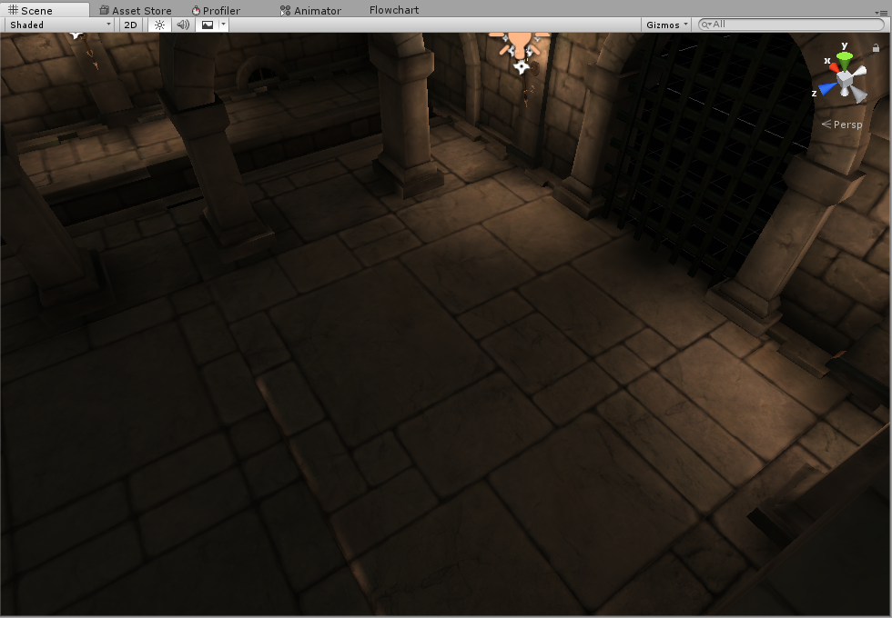
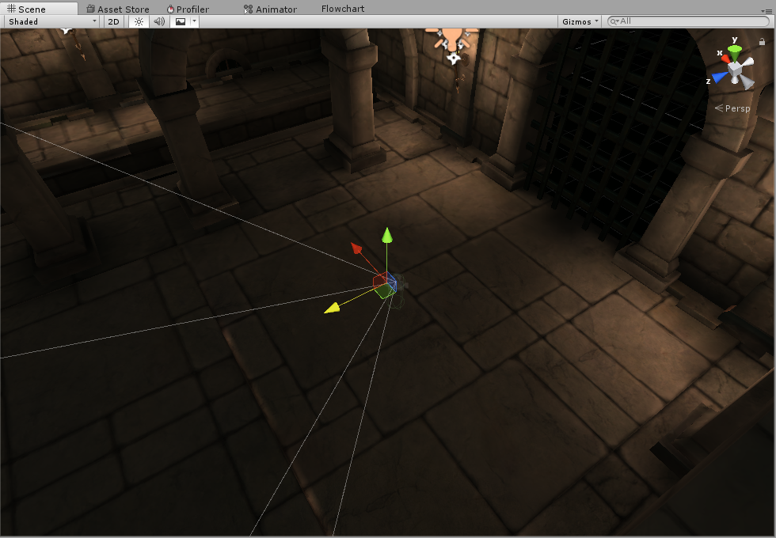
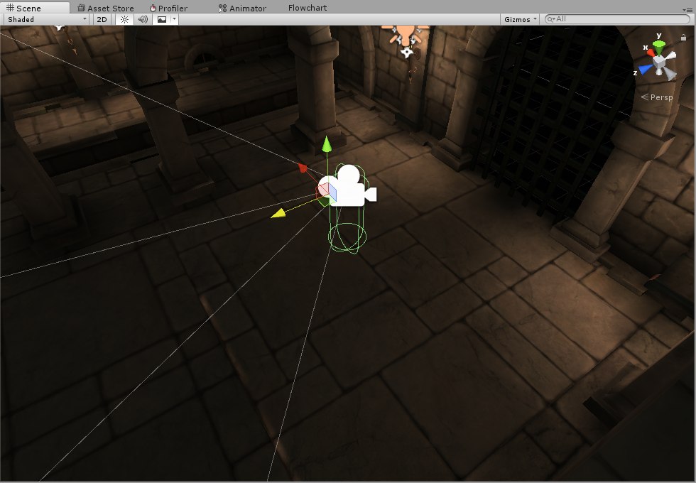

Move To View を改良する
Move To View について
シーンで表示している位置にオブジェクトを動かす機能でMove To Viewがあります。メニューのGameObject-> Move To View (Ctrl + Alt + F)です。
たしかにこれを使うとそれっぽい位置にオブジェクトが移動するのですが、だいたい自分の想像していた位置にはいきません。

例えば、上記の画像のシーンビューで適当なオブジェクトを選択し、Move To Viewをしたとすると、下記のような位置に移動します。
床をすり抜けて、どこか遠くに置かれ、結局自分で位置を調整することになります。

私の求めているものは、シーンビューのカメラからレイを飛ばして、最初に当たった位置あたりにオブジェクトが移動するMove To Viewです。
というわけでそれを作ります。
エディタ拡張で実装
適当なEditorフォルダを作り、MyMoveToView.csを作り、以下のコードを実装します。
これでGameObject-> My Move To View (Ctrl + Alt + Z) が使えます。
using UnityEditor;
using UnityEngine;
public class MyMoveToView {
[MenuItem("GameObject/My Move To View %&z")]
static void Do() {
if (Selection.activeGameObject == null) { return; }
var c = SceneView.lastActiveSceneView.camera;
Ray ray = new Ray(c.transform.position, c.transform.forward);
RaycastHit hit;
if (Physics.Raycast(ray, out hit)) {
Selection.activeGameObject.transform.position = hit.point;
} else {
Selection.activeGameObject.transform.position = c.transform.position;
}
}
}
実行すると、想定した位置に移動できました。

確認バージョン
Unity 5.6.4f1